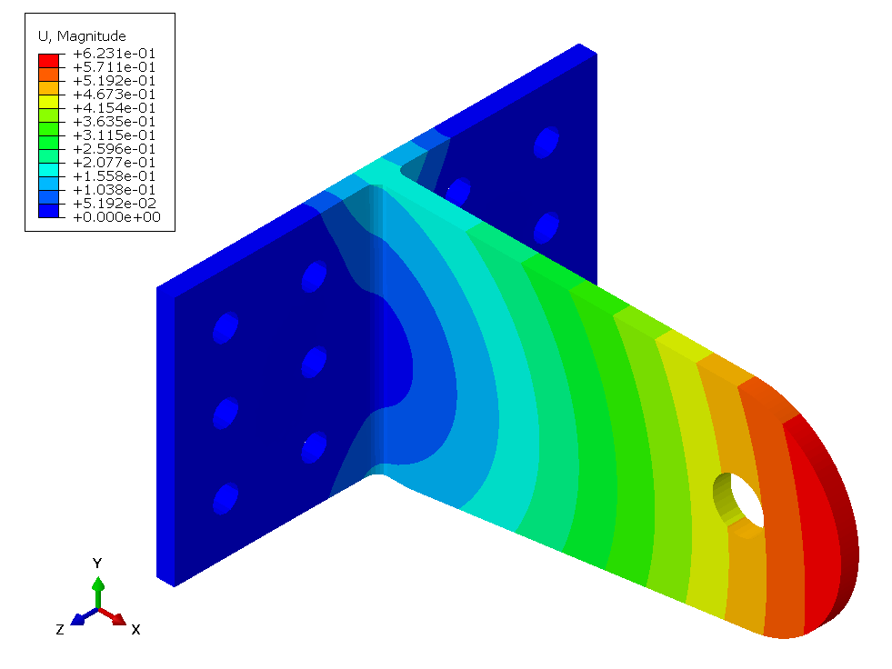
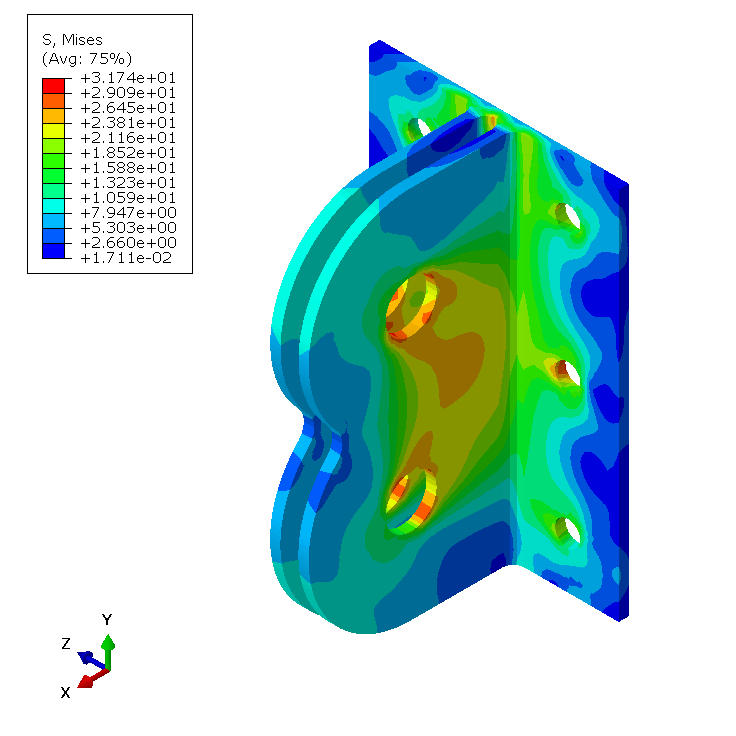
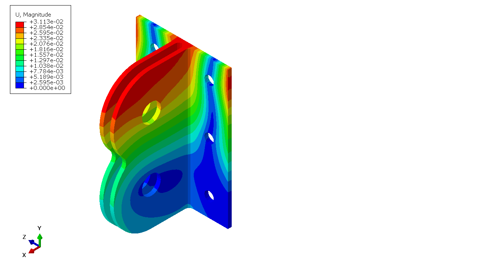
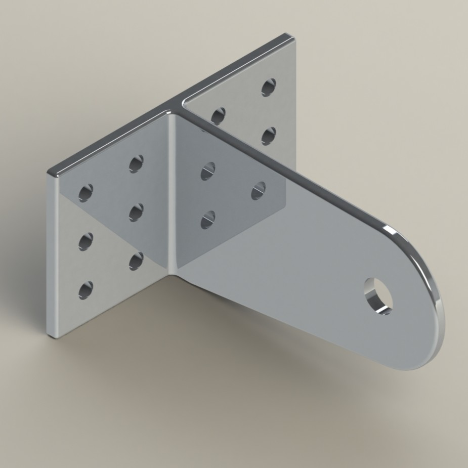
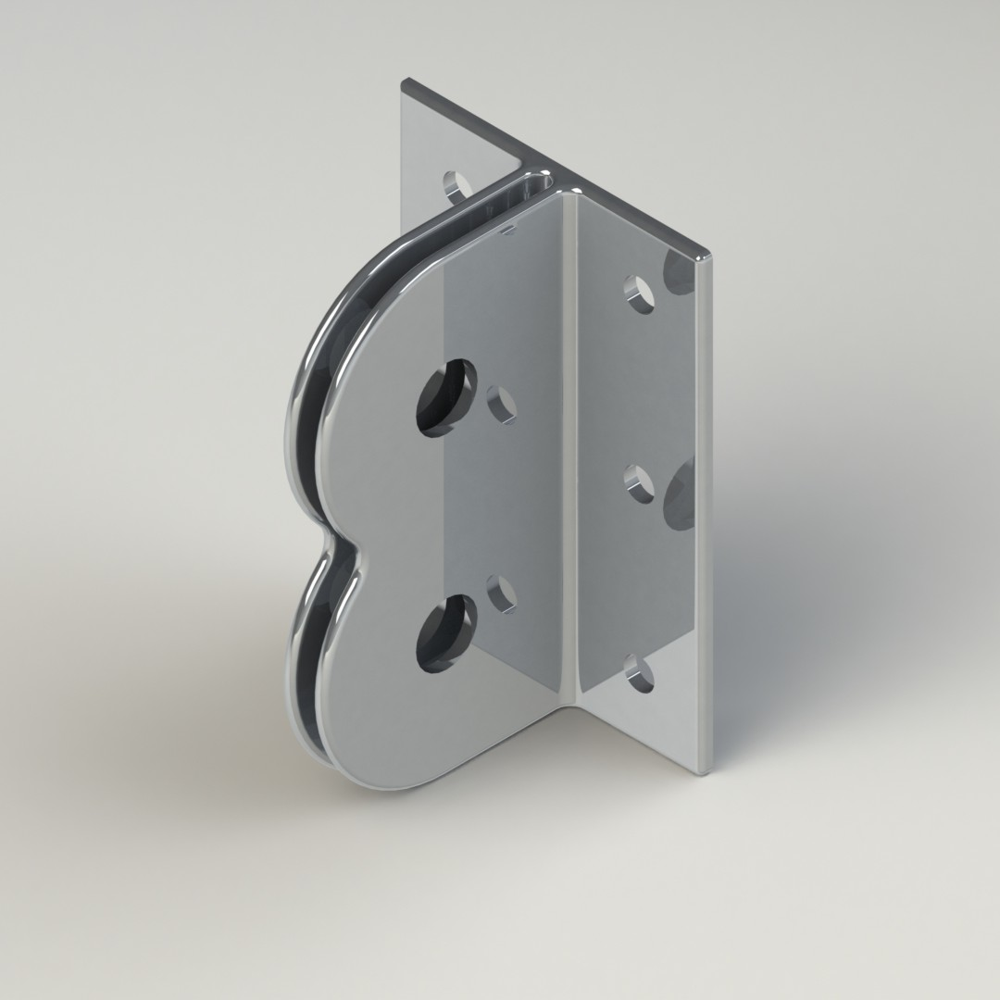
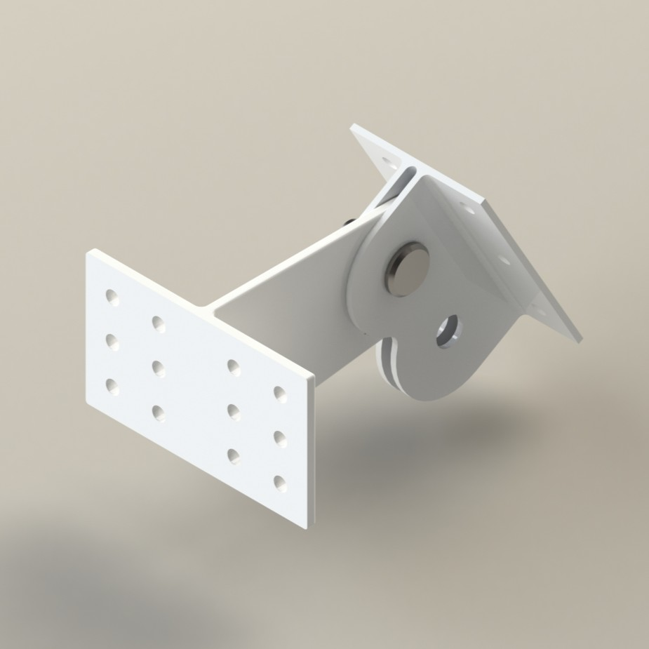
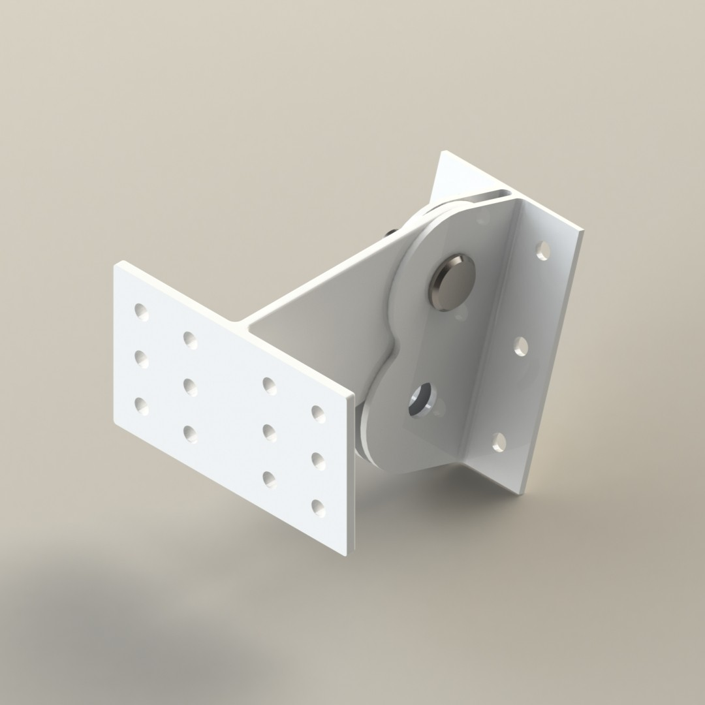

Design of the hinge bracket assembly which connects the aileron to the wing.
Wing bracket Mises stresses
Wing bracket displacement
Aileron bracket Mises stresses
Aileron bracket displacement
Wing side bracket
Aileron side bracket
30 degree upwards deflection
17 degree downwards deflection